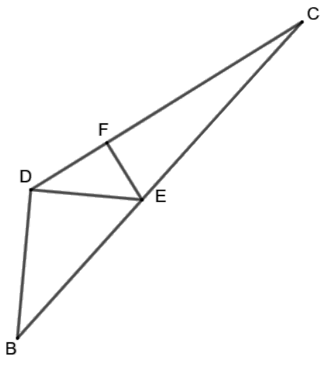
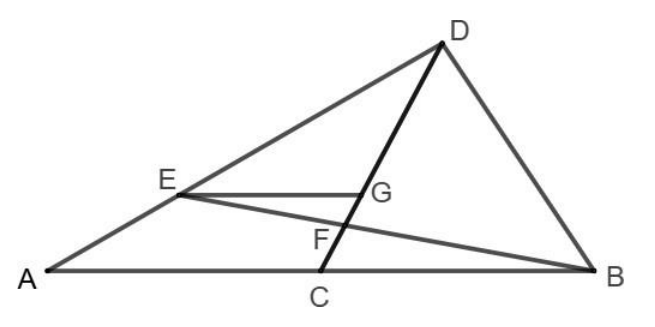
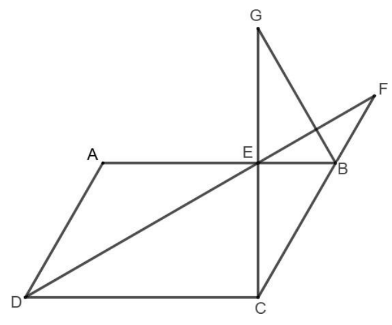

פתרון מלא לכל 10 שאלות הגאומטריה בעבודת הקיץ. בכל סעיף מוסבר איך מגיעים לפתרון, ומתחתיו מופיעים המשפטים והתכונות שבהם השתמשנו. לחיצה על שם של משפט מובילה להסבר שלו בארגז הכלים.
הערה על הנוסח: בקובץ ה־PDF חלק מהאותיות בשברים ובשמות של זוויות ומשולשים נחתכו. בכל מקום שבו השלמתי אות חסרה, ההשלמה כתובה בפתרון ומסומנת "השלמה". ההשלמות נבחרו כך שיתאימו לשרטוט, להמשך השאלה ולתשובות שיוצאות מספרים שלמים.
ארגז כלים: המשפטים והתכונות
ז.זמשפט דמיון זווית־זווית
אם שתי זוויות במשולש אחד שוות לשתי זוויות במשולש אחר, המשולשים דומים.
צ.ז.צמשפט דמיון צלע־זווית־צלע
אם שתי צלעות במשולש אחד פרופורציוניות לשתי צלעות במשולש אחר, והזוויות שביניהן שוות, המשולשים דומים.
יחסיחסים במשולשים דומים
היחס בין כל שתי צלעות מתאימות שווה ליחס הדמיון \(k\). היחס בין השטחים הוא \(k^{2}\). זוויות מתאימות שוות.
תאלסמשפט תאלס המורחב וההפוך שלו
ישר המקביל לצלע במשולש יוצר משולש דומה ומחלק את שתי הצלעות האחרות לקטעים פרופורציוניים. ההפך: אם ישר מחלק שתי צלעות באותו יחס, הוא מקביל לצלע השלישית.
∥זוויות בין ישרים מקבילים
ישר שחותך שני ישרים מקבילים יוצר זוויות מתחלפות שוות וזוויות מתאימות שוות.
180°זוויות בסיסיות
סכום הזוויות במשולש הוא 180°. זוויות צמודות משלימות ל־180°. זוויות קודקודיות שוות. שני ישרים המאונכים לאותו ישר מקבילים זה לזה.
מקביליתתכונות ומשפטי מקבילית
במקבילית צלעות נגדיות שוות ומקבילות, זוויות נגדיות שוות, זוויות סמוכות משלימות ל־180°, והאלכסונים חוצים זה את זה. מרובע עם שני זוגות צלעות מקבילות, או עם זוג צלעות נגדיות שוות ומקבילות, הוא מקבילית.
מעויןתכונות מעוין
כל הצלעות שוות. האלכסונים מאונכים זה לזה, חוצים זה את זה וחוצים את זוויות המעוין.
ש״שמשולש שווה שוקיים
זוויות הבסיס שוות, ולהפך: אם שתי זוויות שוות, הצלעות שמולן שוות. התיכון לבסיס הוא גם גובה וגם חוצה זווית הראש.
2:1מפגש התיכונים
שלושת התיכונים נפגשים בנקודה אחת, שמחלקת כל תיכון ביחס \(2:1\) מהקדקוד. לכן נקודה על תיכון שמחלקת אותו ביחס \(2:1\) מהקדקוד היא מפגש התיכונים.
חוצהמשפט חוצה הזווית
חוצה זווית פנימית במשולש מחלק את הצלע שמולו ביחס של שתי הצלעות הכולאות את הזווית.
90°משולש ישר זווית
משפט פיתגורס. התיכון ליתר שווה למחצית היתר. ניצב שווה למחצית היתר אם ורק אם הזווית שמולו היא 30°.
שטחיחסי שטחים
למשולשים בעלי אותו גובה (קדקוד משותף ובסיסים על אותו ישר), יחס השטחים שווה ליחס הבסיסים. תיכון מחלק משולש לשני משולשים שווי שטח.
טבלת תשובות
התוצאות הסופיות, לבדיקה מהירה. הסעיפים שבהם מבקשים להוכיח לא מופיעים כאן.
שאלה
תשובות
1
ב. \(\dfrac{CD}{CE} = \dfrac{4}{3}\), \(\dfrac{BD}{DE} = \dfrac{4}{3}\) · ג. \(\dfrac{BD}{BE} = \dfrac{4}{5}\) · ד. יחס דמיון \(5:3\), \(DF:FC = 7:18\)
הנקודה \(E\) נמצאת על הצלע \(BC\) במשולש \(BCD\), ו־\(\measuredangle DBE = \measuredangle CDE\).

השרטוט מעבודת הקיץ
א.הוכחה: \(\triangle BCD \sim \triangle DCE\)
דרך החשיבה
כדי להוכיח דמיון מחפשים שתי זוויות שוות. לשני המשולשים יש את הזווית \(C\), והזווית השנייה נתונה. חשוב לכתוב את ההתאמה בין הקדקודים לפי הזוויות השוות, כי ממנה יוצאים היחסים שנצטרך בהמשך.
זווית משותפת
הזווית \(C\) משותפת לשני המשולשים:
\(\measuredangle BCD = \measuredangle DCE\)
זווית נתונה
\(E\) על \(BC\), ולכן \(\measuredangle DBE\) היא \(\measuredangle DBC\). לפי הנתון:
\(\measuredangle DBC = \measuredangle CDE\)
מסקנה
לפי משפט ז.ז:
\(\triangle BCD \sim \triangle DCE\)
ההתאמה:
\(B \leftrightarrow D,\ C \leftrightarrow C,\ D \leftrightarrow E\)
השלמה: בקובץ נחתכה האות השנייה במונה. \(\dfrac{BE}{CE}\) היא הקריאה היחידה שמתאימה לשרטוט ונותנת תוצאות שלמות.
דרך החשיבה
כשנתון יחס בין קטעים מסמנים אותם בעזרת משתנה אחד: \(7k\) ו־\(9k\). מהדמיון בסעיף א יש פרופורציה שבה \(CD\) מופיע פעמיים, ולכן ממנה מקבלים את \(CD^{2}\).
שני המשולשים ישרי זווית, ולכן מספיקה עוד זווית חדה שווה. יחס הדמיון הוא היחס בין היתרים. כדי לחשב את \(DF:FC\) צריך לבטא את כל הקטעים באותו משתנה: מסעיף ג (\(m\)) עוברים ל־\(k\) של סעיף ב.
קטעים על ישר שחוצה שני ישרים מקבילים יוצרים שני משולשים דומים ("פרפר"): זוויות קודקודיות וזוויות מתחלפות. לחלק (2) משתמשים בכך שמפגש התיכונים מחלק כל תיכון ביחס \(2:1\) מהקדקוד.
\(DC\) תיכון במשולש \(ABD\), כלומר \(C\) אמצע \(AB\). הנקודה \(E\) על \(AD\), ו־\(DE = 2AE\). דרך \(E\) עובר ישר המקביל ל־\(AB\) וחותך את \(DC\) בנקודה \(G\).

השרטוט מעבודת הקיץ
א.מצאו את \(\dfrac{EG}{AC}\)
דרך החשיבה
במשולש \(DAC\) הקטע \(EG\) מקביל לצלע \(AC\), ולכן לפי תאלס המורחב היחס \(EG:AC\) שווה ליחס \(DE:DA\), שאותו מקבלים מהנתון.
\(EG \parallel BC\), ולכן \(BE\) ו־\(GC\) יוצרים "פרפר": שני משולשים דומים עם קדקוד ב־\(F\). כדי לחשב את \(DF:FC\) מסמנים את כל הקטע \(DC\) במשתנה אחד ומחלקים אותו לפי היחסים.
היחס \(1:3\) מסעיף א והיחס \(AF:AD = 1:3\) מהנתון מרמזים על דמיון צ.ז.צ: שתי צלעות ביחס \(1:3\) והזווית שביניהן. הזווית שביניהן היא זווית בין צלע לאלכסון, והאלכסון חוצה את זוויות המעוין.
סעיף (1): זווית שווה
\(AD = DC\) (צלעות המעוין), ובמשולש שווה השוקיים \(ADC\) זוויות הבסיס שוות:
\(\measuredangle FAE = \measuredangle DCE\)
יחסי צלעות
\(DF = 2AF\), ולכן \(AF = \dfrac{AD}{3}\), ו־\(CD = AD\):
\(\dfrac{AF}{CD} = \dfrac{1}{3}\)
מסעיף א:
\(\dfrac{AE}{CE} = \dfrac{1}{3}\)
מסקנה
שתי צלעות פרופורציוניות והזווית שביניהן שווה, לפי צ.ז.צ:
\(\triangle AEF \sim \triangle CED\)
\(A \leftrightarrow C,\ E \leftrightarrow E,\ F \leftrightarrow D\)
יחס הדמיון:
\(1:3\)
סעיף (2): זוויות מתאימות
\(\measuredangle AEF\) ו־\(\measuredangle CED\) הן זוויות מתאימות במשולשים הדומים:
השלמה: בקובץ נחתכה האות הראשונה בשם המשולש. מדובר במשולש \(FED\), ו־\(EG\) חוצה את \(\measuredangle FED\) כאשר \(G\) על \(FD\). רק בקריאה הזו שני חלקי הסעיף נכונים.
דרך החשיבה
כדי להוכיח שני ישרים מקבילים, מראים ששניהם מאונכים לאותו ישר (\(AC\)). לזה מחשבים זוויות סביב הנקודה \(E\) בעזרת סעיף ב(2). לחלק (2) משתמשים במשפט חוצה הזווית ובדמיון מסעיף ב.
השלמה: בקובץ נחתכה האות האחרונה בשמות המשולשים. הקריאה הטבעית היא \(AEF\) בסעיף (1) ו־\(CED\) בסעיף (2), המשולשים הדומים מסעיף ב.
דרך החשיבה
כל המשולשים שקדקודם \(E\) ובסיסם על הצלע \(AD\) הם בעלי אותו גובה, ולכן יחס השטחים שלהם הוא יחס הבסיסים. כדי להשוות את \(\triangle CED\) משתמשים ביחס הדמיון: יחס השטחים הוא ריבוע יחס הדמיון.
ב.\(A\) אמצע \(CD\), ו־\(\dfrac{BC}{AC} = \dfrac{5}{3}\)
השלמה: בקובץ נחתכה האות השנייה במונה. התשובה זהה אם המונה הוא \(BC\) או \(BD\), כי \(BC = BD\).
דרך החשיבה
מסמנים את הקטעים לפי היחס הנתון (\(3k\) ו־\(5k\)), ומוציאים את \(DE\) מהפרופורציה של סעיף א. לשטחים: למשולשים \(ADE\) ו־\(ABE\) יש קדקוד משותף \(A\) ובסיסים על אותו ישר.
ג.האנך ל־\(BC\) מ־\(C\) פוגש את המשך \(BA\) בנקודה \(F\)
דרך החשיבה
במשולש שווה שוקיים התיכון לבסיס הוא גם גובה, ולכן יש זווית ישרה ב־\(A\). שני המשולשים ישרי זווית, ומספיקה עוד זווית חדה שווה. אחר כך מוצאים את \(AB\) בפיתגורס ואת \(AF\) מהדמיון.
סעיף (1): זווית ישרה
\(BA\) תיכון לבסיס במשולש שווה השוקיים \(BCD\), ולכן גם גובה:
ג.\(G\) אמצע \(EF\), והמשך \(BG\) חותך את \(AC\) בנקודה \(H\)
דרך החשיבה
מרובע שבו זוג צלעות נגדיות שוות ומקבילות הוא מקבילית. הדמיון נובע מכך ש־\(GF \parallel BC\) (זוויות מתאימות). מיחס הדמיון \(GF:BC\) מקבלים את היחס \(HF:HC\).
סעיף (1): מקבילית \(BEGD\)
\(G\) אמצע \(EF\), ומסעיף ב:
\(EG = \dfrac{EF}{2} = BD\)
\(EF \parallel BC\):
\(EG \parallel BD\)
זוג צלעות נגדיות שוות ומקבילות, ולכן \(BEGD\) מקבילית.
\(ABCD\) מקבילית, ו־\(\measuredangle C\) קהה. הנקודה \(E\) על הצלע \(AB\), והנקודה \(F\) על המשך הצלע \(CB\). \(AE = AD\) ו־\(BE = BF\).

השרטוט מעבודת הקיץ
א.נסמן \(\measuredangle ADE = \alpha\)
השלמה: בסעיף (1) נחתכה האות האחרונה, והכוונה היא ל־\(\measuredangle ABC\). בסעיף (2) צריך להוכיח ש־\(E\) נמצאת על הקטע \(DF\).
דרך החשיבה
עובדים עם זוויות: במשולש שווה שוקיים זוויות הבסיס שוות, ובמקבילית זוויות סמוכות משלימות ל־\(180^{\circ}\). כדי להוכיח ששלוש נקודות על ישר אחד, מראים שהזווית ב־\(E\) היא זווית שטוחה.
ב.\(G\) על המשך \(CE\) כך ש־\(EG = EC\), ונתון \(BC = BG\)
השלמה: בסעיף (2) נחתכה האות הראשונה, והכוונה היא כנראה ל־\(\measuredangle ECB\). בסוף הסעיף מופיעה גם \(\measuredangle GBC\).
דרך החשיבה
\(E\) אמצע \(CG\) ו־\(BC = BG\), ולכן \(BE\) הוא התיכון לבסיס במשולש שווה שוקיים, והוא גם גובה. את \(\measuredangle ECB\) מקבלים מסכום הזוויות במשולש ישר הזווית \(CEB\).
סעיף (1): התיכון לבסיס
\(BC = BG\) ו־\(EG = EC\), ולכן \(BE\) תיכון לבסיס \(CG\) במשולש שווה השוקיים \(BCG\), והוא גם גובה:
השלמה: בקובץ נעלם הסמל אחרי "מצאו את". לפי שאר הנתונים, מבקשים את \(\alpha\).
דרך החשיבה
שני המשולשים \(ADE\) ו־\(BFE\) שווי שוקיים עם אותן זוויות בסיס, ולכן דומים, והיחס הנתון \(DE = 2EF\) הוא יחס הדמיון. מכאן מקבלים \(BC = 2BE\), ובמשולש ישר זווית ניצב שהוא חצי היתר נמצא מול זווית של \(30^{\circ}\).
דמיון
בשני המשולשים זוויות הבסיס שוות ל־\(\alpha\) (סעיף א):
\(\triangle ADE \sim \triangle BFE\)
יחס הדמיון:
\(\dfrac{DE}{FE} = 2\)
הצלעות
\(BE = t\)
\(AE = 2BE = 2t\)
\(AD = AE = 2t\)
במקבילית:
\(BC = AD = 2t\)
משולש \(CEB\)
במשולש ישר הזווית \(CEB\) הניצב \(BE\) הוא חצי היתר \(BC\):
ד.\(S_{\triangle BEF} = S\). הביעו את שטח המקבילית \(ABCD\)
דרך החשיבה
משולשים עם קדקוד משותף \(E\) ובסיסים על הישר \(CF\) הם בעלי אותו גובה. שטח מקבילית הוא צלע כפול הגובה אליה, ו־\(CE\) הוא הגובה לצלע \(AB\) (כי \(CE \perp BE\)).
שטח \(\triangle BEC\)
קדקוד משותף \(E\), בסיסים \(BF = t\) ו־\(BC = 2t\):
\(E\) אמצע \(AC\), ולכן \(DE\) תיכון שמחלק את המשולש \(ACD\) לשני משולשים שווי שטח. ל־\(\triangle ABC\) עוברים דרך קדקוד משותף \(A\) ובסיסים על הישר \(BC\).